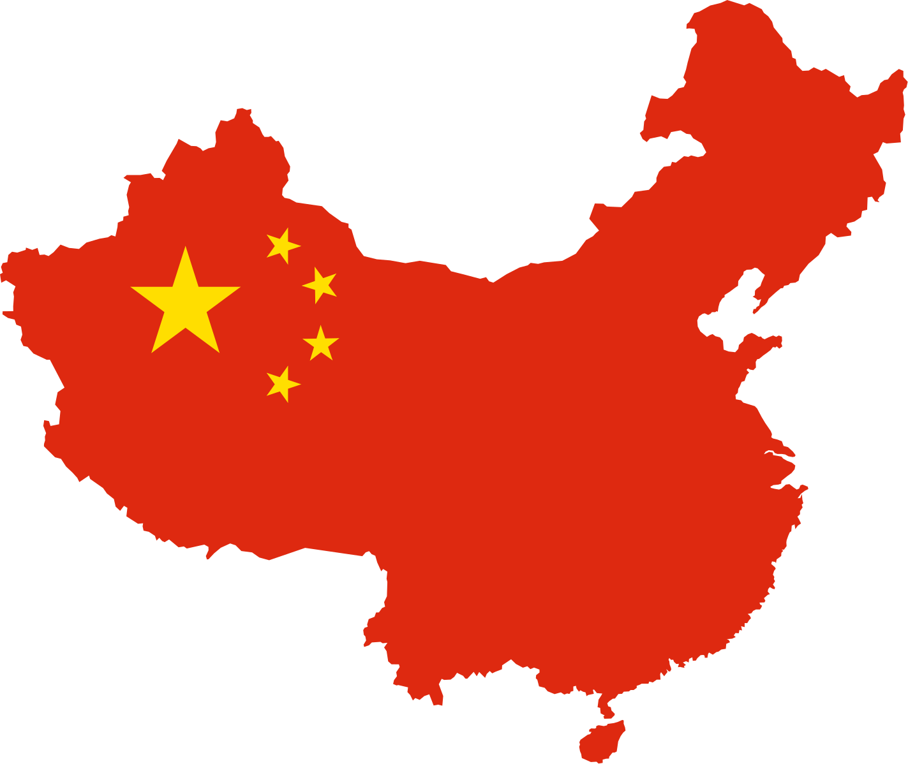

The Test of Chinese as a Foreign Language(TOCFL) (Chinese: 華語文能力測驗;
pinyin: Huáyǔwén Nénglì Cèyàn) is the standardized test of Taiwanese
Mandarin (a type of Mandarin Chinese) language proficiency of Taiwan for
non-native speakers such as foreign students. It is administered by the
Steering Committee for the Test Of Proficiency-Huayu (SC-TOP) (Chinese:
國家華語測驗推動工作委員會; pinyin: Guójiā Huáyǔ Cèyàn Tuīdòng Gōngzuò Wěiyuánhuì).
The committee is under the direction of the Republic of China's Ministry of
Education. The test was formerly known as the TOP or Test Of Proficiency-Huayu.
For children aged 7–12, an age-specific test exists called the Children's
Chinese Competency Certification (or CCCC, Chinese: 兒童華語文能力測驗; pinyin:
Értóng Huáyǔwén Nénglì Cèyàn)